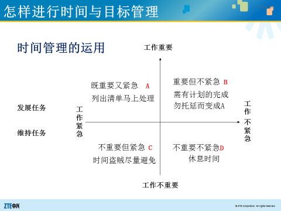

<!doctype html>
<html lang="en-us">
<head>

    <meta charset="utf-8">
    <meta http-equiv="X-UA-Compatible" content="IE=edge">
    <meta name="viewport" content="width=device-width, initial-scale=1">

    <title>时间管理 | Learn More</title>
    <meta property="og:title" content="时间管理 - Learn More">
    <meta property="og:type" content="article">
        
    <meta property="article:published_time" content='2016-09-28T00:00:00&#43;08:00'>
        
        
    <meta property="article:modified_time" content='2016-09-28T00:00:00&#43;08:00'>
        
    <meta name="Keywords" content="">
    <meta name="description" content="时间管理">
        
    <meta name="author" content="">
    <meta property="og:url" content="http://study.tczhong.com/post/%E6%97%B6%E9%97%B4%E7%AE%A1%E7%90%86/">
    <link rel="shortcut icon" href="/favicon.ico" type="image/x-icon">
    
    <link href="https://cdnjs.cloudflare.com/ajax/libs/font-awesome/5.15.2/css/all.min.css" rel="stylesheet">
    
    <link rel="stylesheet" href='/css/normalize.css'>
    <link rel="stylesheet" href='/css/style.css'>
    
    <script type="text/javascript" src="//cdnjs.cloudflare.com/ajax/libs/jquery/3.4.1/jquery.min.js"></script>

    

    <nav class="navbar navbar-default navbar-fixed-top">

    

        
            <ul class="nav navbar-nav navbar-right">
                
                    <li class="navbar-icon"><a href="mailto:me@tczhong.com"><i class="far fa-envelope"></i></a></li>
                
                    <li class="navbar-icon"><a href="https://github.com/cczhong11/"><i class="fab fa-github"></i></a></li>
                
                    <li class="navbar-icon"><a href="https://www.linkedin.com/in/tianchen-zhong/"><i class="fab fa-linkedin"></i></a></li>
                
                    <li class="navbar-icon"><a href="https://stackoverflow.com/users/7112540/tc-zhong"><i class="fab fa-stack-overflow"></i></a></li>
                
            </ul>
        

  

    </nav>
    
    
</head>


<body>
    <header id="header" class="clearfix">
    <div class="container">
        <div class="col-group">
            <div class="site-name ">
                
                    <a id="logo" href="http://study.tczhong.com/">
                        Learn More
                    </a>
                
                
            </div>
            <div>
                <nav id="nav-menu" class="clearfix">
                    <a class="current" href="http://study.tczhong.com/">首页</a>
                    
                    <a  href="http://study.tczhong.com/tags/weekly/" title="每周分享">每周分享</a>
                    
                    <a  href="http://study.tczhong.com/tags/love/" title="亲密关系">亲密关系</a>
                    
                    <a  href="http://study.tczhong.com/tags/leetcode/" title="Leetcode">Leetcode</a>
                    
                    <a  href="http://study.tczhong.com/archives/" title="归档">归档</a>
                    
                </nav>
            </div>
        </div>
    </div>
    
</header>

    <div id="body">
        <div class="container">
            <div class="col-group">

                <div class="col-8" id="main">
                    
<div class="res-cons">
    
    <article class="post">
        <header>
            <h1 class="post-title">时间管理</h1>
        </header>
        <date class="post-meta meta-date">
            2016年9月28日
        </date>
        
        <div class="post-meta">
            <span>|</span>
            
            <span class="meta-category"><a href='http://study.tczhong.com/categories/%E7%94%9F%E6%B4%BB'>生活</a></span>
            
        </div>
        
        
        
        <div class="post-content">
            <h1 id="时间管理的意义">时间管理的意义</h1>
<p>为什么我们需要管理时间？因为时间是唯一有限的资源，时间是一去不复返的，而其他的都可以再生。任何人都无法回到过去，每一分每一秒都是我们需要管理好的财富。俗话说时间就是金钱，金钱人们很少会乱花，对于大笔的开支都会仔细算计，有人甚至会做预算，计划好未来的开销。时间也是一样,把时间花在有意义的地方十分重要。<!-- raw HTML omitted --></p>
<p><strong>管理时间的目的就是为了实现自己人生的目标，所以找好自己人生的目标是第一步</strong>。你希望十年后，二十年后的你是怎样的呢？这个问题真的需要我们每个人好好思考一下。因为这个问题决定了你准备过一个怎样的生活。找到了人生目标之后就需要思考为了达成这个目标你需要做一些什么事情，不要做有悖于目标达成的事。这些安排可以是长期的，也可以是明天就可以开始做的事情。我认为管理时间的对象是任务、事项，而不是时间。时间只是我们做某件事情所需要花费的代价而已，管理好自己需要做的事情，也就是计划分配多少时间到这些事情之中。</p>
<p>再次阅读李笑来的《跟时间做朋友》，对于时间管理有新的想法。重中之重是明白积累的力量。</p>
<h2 id="设立目标的一些注意事项">设立目标的一些注意事项</h2>
<p>在设立目标的时候要知道自己的能力，注意可实现性。越不切实际的目标越不可能实现，你也会越早的放弃。一种好的方法就是事前验尸，思考可能导致自己失败的原因。假设你已经失败了，你可能在什么地方出错。</p>
<p>另外人们也不会对于未来的自己有一个清晰的认识，好的办法就是利用较短的时间间隔来思考，用30天而不是一个月，人们这样做会减少不少时间。原因是这样思考可以有一个更加清晰的认识，意识中会对这个长度认识更加深刻。</p>
<p>另外我们对于自己的行为的作用估计不足。对于真正有用的事情，我们总是高估它的作用。对于目标没有帮助的事情，我们总会低估他们对于我们的影响。对于自己的行为有错误的认识。解决办法就是养成复利的习惯，关注那一点点小习惯，使之产生累积效应。</p>
<h1 id="时间的分类">时间的分类</h1>
<p>一个人的时间可以分成以下几类</p>
<ul>
<li>大块时间：2小时以上，可以完成当天重要的事情。如早起后到中午吃饭前的时间</li>
<li>零碎时间：时间的存储器。如在交通上花费的时间，洗衣服时的时间</li>
<li>固定时间：某段时间在某个时段内进行效果最好，把它固定下来。也就是每天都会做的事情的一段时间</li>
<li>安静时间：可以安静独处一个人思考的时间，一般是晚上。</li>
<li>弹性时间：在两三段工作后，安排弹性时间，来弥补以前没有完成的事情，留作用来调节的时间。10~20min</li>
</ul>
<p>在公司的时间也可以分为：</p>
<ol>
<li>受上司支配的时间</li>
<li>受组织支配的时间</li>
<li>自己的时间</li>
</ol>
<p>不同的时间分类有不同的方法，在制定计划安排这些时间时，首先需要了解好自己在不同时间段的表现，之后安排恰当的任务在制定的时间之中。人不可能一天之中都保持很高的效率，在自己效率较低时做一些机械的事情，如运动等，在大块时间的时候做一些重要的事情。</p>
<h1 id="管理时间的方法">管理时间的方法</h1>
<h2 id="制定任务的方法">制定任务的方法</h2>
<h3 id="任务">任务</h3>
<p>可以将任务分成一下4类 <!-- raw HTML omitted -->
<!-- raw HTML omitted --></p>
<p>有很多事情都是满足我们的长期目标，但是却不是很紧急。<strong>人们在安排自己的短期任务时，经常只注意这件事情是什么，忽略这件事情的长期价值和作用</strong>。所以有时我们的日程表会被紧急不重要的事情堆满，而那些长期的目标却无法达成。这时候就需要想想<a href="https://www.wikiwand.com/zh/%E5%B8%95%E9%9B%B7%E6%89%98%E6%B3%95%E5%88%99">2/8法则</a>,80%的结果是由20%的努力完成的。想想做这件事情对于自己和他人的影响，如果不重要，或者要求不高，那么完全可以忽略一些东西，将事情完成。虽说细节决定成败，但是不是每件事情都如此需要注重细节，如果不注意这一点，就会把不少时间花在没有意义的事情上，导致最后没有时间去做真正重要的事情。定下任务时想好我真的需要做吗？可以有其他人帮我做吗？减少一半时间做结果会如何？</p>
<p>在制定任务时思考好这件事情和自己的目标多大，有多少是一定要完成的。毕竟一天只有24h，可有效利用的时间其实也就10h一下，对于目标也要学会断舍离。想做的事情会很多，找好阶段目标很重要。</p>
<p>有了任务就需要确定自己的目标，利用<strong>SMART原则</strong>，</p>
<ul>
<li>specific 具体的；</li>
<li>measurable 可测量的；</li>
<li>achievable 可实现的；</li>
<li>relevant 相关联的；</li>
<li>time bound 时间。</li>
</ul>
<p>任务和目标是相辅相成的，如果没有目标，那么这个任务的实现结果就不好评估，达不到时间管理的目的。</p>
<h3 id="任务列表">任务列表</h3>
<p>建立一个任务列表对于日程管理十分重要，把所有之后需要做的事情都放入日程列表之中，这是建立之后日历的基础。这个任务列表最好可以对你进行提醒，让你知道今天应该做什么。对于任务列表的分类不用太细，不同类别的任务利用标签即可，使用3种任务列表记录自己的待办事项：</p>
<ul>
<li>to do 立刻去做的</li>
<li>later 之后再去做</li>
<li>watch 需要经常注意的事情</li>
</ul>
<p>在管理任务的时候可以给自己建立一个inbox，有的时候会有突然出现的任务，但我们又不能及时分类，或者没必要分类。我们就可以把这个任务放在inbox里，以后再整理。</p>
<p>对于工作上的任务可以细分为三个类别，勉强可以完成，完成能力尚可以及精通的任务。对于精通的项目你可以想想自己能否再多做一点，当然这些也是你乐意去做的。对于尚可的项目则是思考我是否愿意在上面获得改进，从中挑选几样花时间增进技能。而对于勉强的内容可以考虑放弃或者交于他人，因为这是你不乐于做的而且会耗费大量时间。但是如果又是重要的，则要考虑能否换一种方式去执行或者思考能否与开心的事情结，把技能提升到尚可的阶段。</p>
<h3 id="日历">日历</h3>
<p>日历是我们日程管理的体现，但是日历又不是那种非常死板的，有弹性时间也很重要。完全按照日历的安排去执行在实际操作中可以说是不可能的，所以需要我们安排好弹性时间以及没有完成任务的处理机制。</p>
<p>对于日程管理的还有一个分类方式，把日子分为自我日，关键日和事务日。自我日是把一天的时间给自己，用于提升自己，维护健康，照顾。关键日把工作聚焦于最关键的事务上，事务日是处理其他事务的日子，如清理杂物，购物，约会等等。这三种也可以两两结合。</p>
<p>个人喜欢全平台的google日历，除了墙的问题，其他都是非常出色的。</p>
<h2 id="完成任务的方法">完成任务的方法</h2>
<p>长时间的做一件事情是一件不符合人思维规律的事情，人保持一段时间的高度集中后，精神必然会涣散，做事的效率也必然会降低。这时候就需要我们去休息放松，做一些别的事情后回来再继续完成任务。</p>
<p>完成需要集中精力去学习，思考的任务时，尤其需要避免多任务处理，因为这个会导致你每件事情都做不好。做不同事情的时候，人的大脑需要切换，切换会导致你的思维不集中，最后导致几件事情都无法完成。多任务自认为可以达到并行的结果，但是效率低，还不是集中精力做一件事情。多任务一般可以在我们做一种机械式的活动时做另外一件事情，也可以算零碎时间。一般可以是输入知识，如听讲座，但之后一定要及时总结，要不然很容易遗忘。多任务也就意味着你需要选择你这时候精力需要耗费在什么上面，但是犹豫不决会耗费你很多的时间，所以说按照直觉去思考，去做你第一个想到的事情，并一口气做好，这样效率最佳。<!-- raw HTML omitted --></p>
<p><a href="https://www.zhihu.com/question/20189826">番茄工作法</a>同样非常重要。一般是25min集中精力，5min休息，循环往复。这种方法可以达到上面提到的一段时间集中时间做一件事情。休息时间也可以让大脑放松，总结之前的任务。<!-- raw HTML omitted -->
在做一些对于自己长期有效但是却无聊乏味的事情的时候，可以将这件事情和一些可以使自己开心愉悦的事情结合起来，这样就可以保证任务的完成度了。</p>
<h2 id="总结任务的方法">总结任务的方法</h2>
<p>任务做完了不能就这么完了，而是需要总结，分析，查看自己时间的漏洞和自己有效率的时间段。《奇特的一生》中的时间统计法的意义在于记录下自己做事情所花费的时间，从中发现自己的提高，激励自己继续前行。一年又一年，时间就这么流走了，但是你究竟这一年做了什么，可能人们想了想回答，好像什么都没有做。时间统计法正是可以帮助你发现自己这一段时间的成长，让你清清楚楚的知道自己真正做了什么。也许看着柳比歇夫的厚厚的基本日程记录会觉得很可笑，但也正是这些帮助他完成了很多常人看来很困难的事情。<!-- raw HTML omitted -->
记录下完成每件任务的纯时间会让你发现自己的真正所花的时间不多，更可以让你提高自己的效率。</p>
<h3 id="周总结">周总结</h3>
<p>周总结的是对自己一周前的周计划的回应，要回答以下几个问题：</p>
<ol>
<li>我完成了哪此目标？</li>
<li>我遭遇到哪此挑战？作为自己的反省，并开始下周的使命检讨与安排</li>
<li>我做过哪此决定？是否将最重要的事屑列为当务之急？</li>
</ol>
<p>周总结的最主要目的就是为了之后的计划安排，总结一下一周每件事情做的如何，花了多少时间，完成的结果如何，对于以后都是一个参考。</p>
<h1 id="管理分心和打扰">管理分心和打扰</h1>
<h2 id="其他事物">其他事物</h2>
<p>在需要专心做事时，关闭手机的网络功能可以使自己屏蔽掉很多的app推送，社交网络的信息，很少有什么事情是需要立刻去处理的。所以采用番茄工作法的时候可以找一个安静的环境，隔绝外界的干扰，专心致志做一件事情。</p>
<h2 id="时间窃贼">时间窃贼</h2>
<p>一般有几种人会中途打断你的行为：</p>
<ul>
<li>爱聊闲话的人，可以直接忽略，不要给他们所期待的开口机会</li>
<li>牢骚满腹的人，对他们说：我对此事很遗憾，但是我现在不能与你讨论这件事情，因为我必须要完成手边的工作/我已经迟到了/我今天的事情太多了</li>
<li>新手，他们总是来寻求帮助。先让他们自己想办法，在与之交流</li>
</ul>
<p>有的时候也会出现自己已经很忙但是还会答应别人请求的事情。要学会说“不”，首先给出一个正面的第一反应，如“谢谢你问我”，“这听起来很有趣”，“你问我，我感到很荣幸”。之后避免说但是，用以及和然而。最后说“尽管我非常希望帮忙，但是我不得不拒绝，因为我现在要集中精力进行&hellip;, 否则对于我已经答应的人很不公平”</p>
<h1 id="其他时间管理经验">其他时间管理经验</h1>
<ol>
<li>不要说等待，让别人给你完成任务的期限</li>
<li>赶紧起床，有更多时间的第一要务是从床上立即起来！</li>
</ol>

        </div>

        


        


        <div class="post-meta meta-tags">
            
            <ul class="clearfix">
                
                <li><a href='http://study.tczhong.com/tags/time'>time</a></li>
                
            </ul>
            
        </div>
    </article>
    
    <div id="disqus_thread"></div>
<script type="application/javascript">
    window.disqus_config = function () {
    
    
    
    };
    (function() {
        if (["localhost", "127.0.0.1"].indexOf(window.location.hostname) != -1) {
            document.getElementById('disqus_thread').innerHTML = 'Disqus comments not available by default when the website is previewed locally.';
            return;
        }
        var d = document, s = d.createElement('script'); s.async = true;
        s.src = '//' + "tczhong" + '.disqus.com/embed.js';
        s.setAttribute('data-timestamp', +new Date());
        (d.head || d.body).appendChild(s);
    })();
</script>
<noscript>Please enable JavaScript to view the <a href="https://disqus.com/?ref_noscript">comments powered by Disqus.</a></noscript>
<a href="https://disqus.com" class="dsq-brlink">comments powered by <span class="logo-disqus">Disqus</span></a>

    
    
</div>

                </div>

                <div id="secondary">
    <section class="widget">
        <form id="search" action='//www.google.com/search' method="get" accept-charset="utf-8" target="_blank" _lpchecked="1">
      
      <input type="text" name="q" maxlength="20" placeholder="Search">
      <input type="hidden" name="sitesearch" value="http://study.tczhong.com/">
      <button type="submit" class="submit icon-search"></button>
</form>
    </section>
    
    <section class="widget">
        <h3 class="widget-title">最近文章</h3>
<ul class="widget-list">
    
    <li>
        <a href="http://study.tczhong.com/post/sharing/tcsharing_205/" title="TC分享第 205 期">TC分享第 205 期</a>
    </li>
    
    <li>
        <a href="http://study.tczhong.com/post/sharing/tcsharing_204/" title="TC分享第 204 期">TC分享第 204 期</a>
    </li>
    
    <li>
        <a href="http://study.tczhong.com/post/sharing/tcsharing_203/" title="TC分享第 203 期">TC分享第 203 期</a>
    </li>
    
    <li>
        <a href="http://study.tczhong.com/post/sharing/tcsharing_202/" title="TC分享第 202 期">TC分享第 202 期</a>
    </li>
    
    <li>
        <a href="http://study.tczhong.com/post/movie/%E5%87%BA%E8%B5%B0%E7%9A%84%E5%86%B3%E5%BF%83/" title="《出走的决心》影评 ">《出走的决心》影评 </a>
    </li>
    
    <li>
        <a href="http://study.tczhong.com/post/sharing/tcsharing_201/" title="TC分享第 201 期">TC分享第 201 期</a>
    </li>
    
    <li>
        <a href="http://study.tczhong.com/post/sharing/tcsharing_200/" title="TC分享第 200 期">TC分享第 200 期</a>
    </li>
    
    <li>
        <a href="http://study.tczhong.com/post/sharing/tcsharing_199/" title="TC分享第 199 期">TC分享第 199 期</a>
    </li>
    
    <li>
        <a href="http://study.tczhong.com/post/sharing/tcsharing_198/" title="TC分享第 198 期">TC分享第 198 期</a>
    </li>
    
    <li>
        <a href="http://study.tczhong.com/post/sharing/tcsharing_197/" title="TC分享第 197 期">TC分享第 197 期</a>
    </li>
    
</ul>
    </section>

    

    <section class="widget">
        <h3 class="widget-title">分类</h3>
<ul class="widget-list">
    
    <li><a href="http://study.tczhong.com/categories/%E5%AD%A6%E4%B9%A0/">学习 (2)</a></li>
    
    <li><a href="http://study.tczhong.com/categories/%E6%A8%A1%E5%9E%8B%E6%80%9D%E7%BB%B4/">模型思维 (24)</a></li>
    
    <li><a href="http://study.tczhong.com/categories/%E7%94%9F%E6%B4%BB/">生活 (3)</a></li>
    
    <li><a href="http://study.tczhong.com/categories/%E7%A8%8B%E5%BA%8F%E5%91%98/">程序员 (3)</a></li>
    
    <li><a href="http://study.tczhong.com/categories/%E8%AF%BB%E4%B9%A6%E6%8E%A8%E8%8D%90/">读书推荐 (3)</a></li>
    
</ul>
    </section>

    <section class="widget">
        <h3 class="widget-title">标签</h3>
<div class="tagcloud">
    
    <a href="http://study.tczhong.com/tags/android/">Android</a>
    
    <a href="http://study.tczhong.com/tags/array/">array</a>
    
    <a href="http://study.tczhong.com/tags/auto/">auto</a>
    
    <a href="http://study.tczhong.com/tags/bit/">bit</a>
    
    <a href="http://study.tczhong.com/tags/book/">book</a>
    
    <a href="http://study.tczhong.com/tags/cooking/">cooking</a>
    
    <a href="http://study.tczhong.com/tags/development/">development</a>
    
    <a href="http://study.tczhong.com/tags/documentation/">documentation</a>
    
    <a href="http://study.tczhong.com/tags/dp/">dp</a>
    
    <a href="http://study.tczhong.com/tags/food/">food</a>
    
    <a href="http://study.tczhong.com/tags/fun/">fun</a>
    
    <a href="http://study.tczhong.com/tags/google/">google</a>
    
    <a href="http://study.tczhong.com/tags/graph/">graph</a>
    
    <a href="http://study.tczhong.com/tags/happiness/">happiness</a>
    
    <a href="http://study.tczhong.com/tags/health/">health</a>
    
    <a href="http://study.tczhong.com/tags/leetcode/">leetcode</a>
    
    <a href="http://study.tczhong.com/tags/life/">life</a>
    
    <a href="http://study.tczhong.com/tags/love/">love</a>
    
    <a href="http://study.tczhong.com/tags/movie/">movie</a>
    
    <a href="http://study.tczhong.com/tags/python/">python</a>
    
    <a href="http://study.tczhong.com/tags/stack/">stack</a>
    
    <a href="http://study.tczhong.com/tags/string/">string</a>
    
    <a href="http://study.tczhong.com/tags/study/">study</a>
    
    <a href="http://study.tczhong.com/tags/tech/">tech</a>
    
    <a href="http://study.tczhong.com/tags/time/">time</a>
    
    <a href="http://study.tczhong.com/tags/tree/">tree</a>
    
    <a href="http://study.tczhong.com/tags/vscode/">vscode</a>
    
    <a href="http://study.tczhong.com/tags/wechat/">wechat</a>
    
    <a href="http://study.tczhong.com/tags/weekly/">weekly</a>
    
</div>
    </section>

    

    <section class="widget">
        <h3 class="widget-title">其它</h3>
        <ul class="widget-list">
            <li><a href="http://study.tczhong.com/index.xml">文章 RSS</a></li>
        </ul>
    </section>
</div>
            </div>
        </div>
    </div>
    <footer id="footer">
    <div class="container">
        &copy; 2024 <a href="http://study.tczhong.com/">Learn More By </a>.
        Powered by <a rel="nofollow noreferer noopener" href="https://gohugo.io" target="_blank">Hugo</a>.
        <a href="https://www.flysnow.org/" target="_blank">Theme</a> based on <a href="https://github.com/flysnow-org/maupassant-hugo" target="_blank">maupassant</a>.
        
    </div>
</footer>


    
    <script type="text/javascript">
        window.MathJax = {
            tex2jax: {
                inlineMath: [['$', '$']],
                processEscapes: true
                }
            };
    </script>
    <script src='https://cdnjs.cloudflare.com/ajax/libs/mathjax/2.7.5/MathJax.js?config=TeX-MML-AM_CHTML' async></script>


<a id="rocket" href="#top"></a>
<script type="text/javascript" src='/js/totop.js?v=0.0.0' async=""></script>

<script type="application/javascript">
var doNotTrack = false;
if (!doNotTrack) {
	window.ga=window.ga||function(){(ga.q=ga.q||[]).push(arguments)};ga.l=+new Date;
	ga('create', 'UA-120924697-1', 'auto');
	
	ga('send', 'pageview');
}
</script>
<script async src='https://www.google-analytics.com/analytics.js'></script>


</body>

</html>